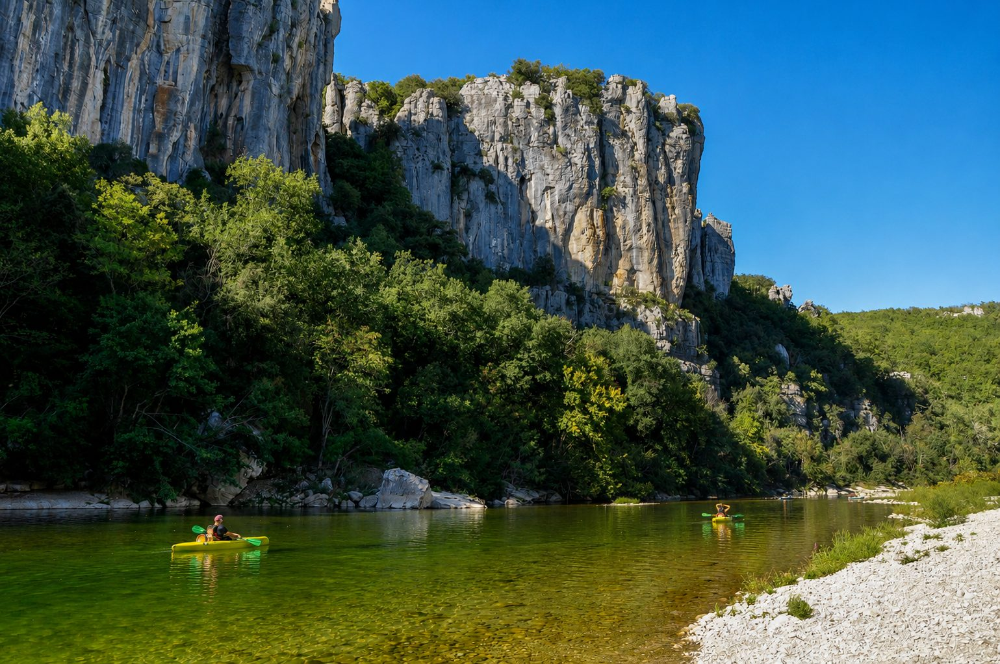

Tussen graniet en kalksteen uitgesleten vormen de Gorges du Chassezac een wilde kloof van 15 kilometer tussen de Ardèche en de Lozère, aan de voet van het beroemde bos van Païolive. Op ongeveer 1u15 van Les Cabritas is het een rustiger alternatief voor de Gorges de l'Ardèche voor liefhebbers van ongerepte natuur.

Een ongerepte rivier, pionier in Frankrijk
De Chassezac is een wilde rivier die nooit droogvalt, ideaal om te kanoën en te kajakken. Het was de eerste rivier in Frankrijk die quota invoerde voor kano's en kajaks, een baanbrekende maatregel die helpt deze uitzonderlijke plek te beschermen en haar toch op een verantwoorde manier toegankelijk houdt.
Tochten voor elk niveau
Er zijn afdalingen van 3, 7 of 10 kilometer, geschikt voor elk niveau, ook voor gezinnen met jonge kinderen vanaf 5 jaar op de kortere trajecten. De kloven liggen in de gemeente Berrias-et-Casteljau, op 6 km van Les Vans en 15 km van Joyeuse, in een omgeving die in het hoogseizoen merkbaar rustiger is dan de Gorges de l'Ardèche.
Goed om te weten voor uw bezoek
Vanwege de quota kunt u in de zomer het best vooraf reserveren. Neem geschikte waterschoenen mee. De tocht is perfect te combineren met een wandeling in het nabijgelegen Bois de Païolive, beroemd om zijn wonderlijke dolomietrotsen.
Praktische informatie vanuit Les Cabritas
- Afstand vanaf Flaviac: ongeveer 1u15 rijden
- Afstand vanaf Saint-Alban-Auriolles: ongeveer 15 min rijden
- Beste periode: mei tot september
- Ideaal voor: kanoën, zwemmen, ongerepte natuur, gezinnen
Zin om de Gorges du Chassezac te ontdekken vanuit uw vakantiehuis in de Ardèche?
Les Cabritas verwelkomt u in twee vakantiehuizen met privézwembad: in Flaviac, in het hart van de Ardèche, en in Saint-Alban-Auriolles, in het hart van de Zuid-Ardèche.